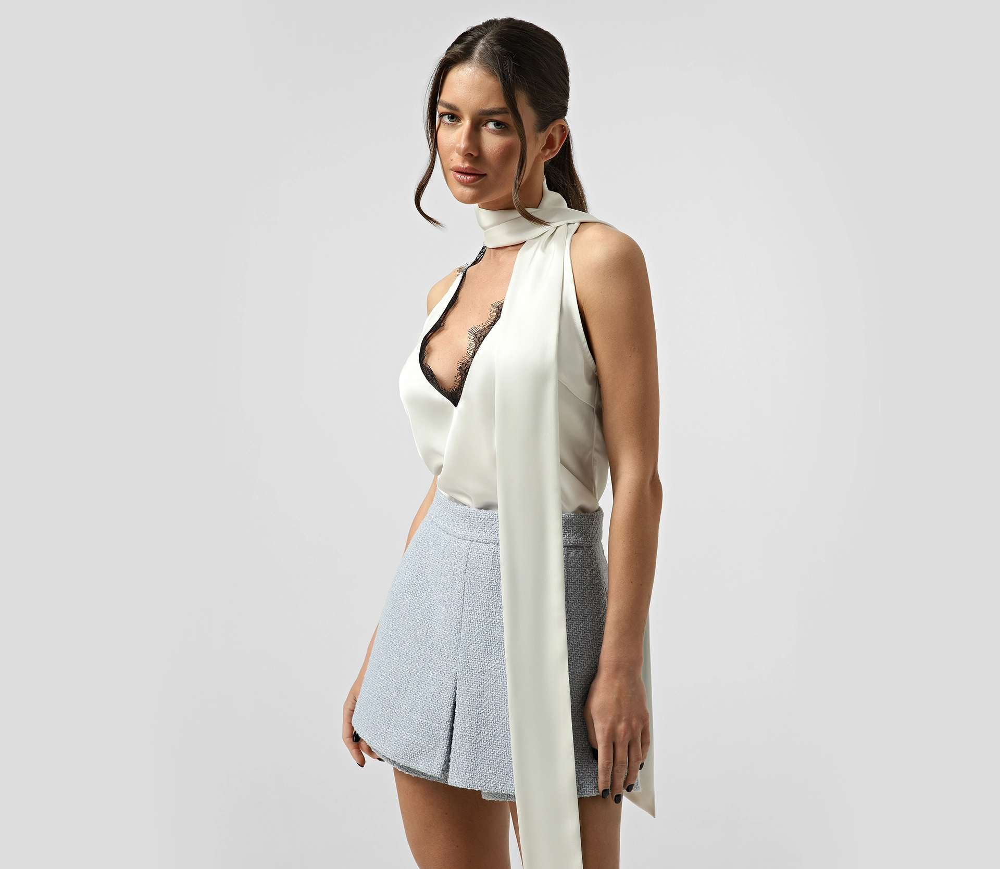

Cover treatment — photo vs. fresh-draft sketch

Photo covers use a 1px inset ring to protect against bright whites.
"Fresh draft" covers (no photo yet) use a hand-sketched SVG on cream paper with grain — the only illustrative treatment in the system.